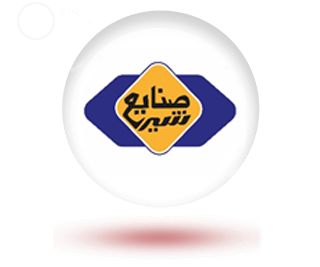
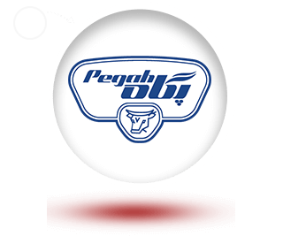

- صفحه اصلی
- قصه پگاه
- خوشمزه های پگاه
- مجله خبری
- مجله سلامتی

- درگاه شفافیت
- پگاهی شو
- خرید از پگاه
- ارتباط با پگاه
- EN
- AR
- RU
سلام من ربات هوشمند پگاه هستم!
چطور میتونم کمکتون کنم؟
شنیدن برخی قصه ها و تکرار شنیدنش لذتبخش است. آنها از روزگاری می آیند که خاطره های شیرینی با خود دارد. خاطره های هفت نسل از مردمی که هنوز هم وقتی شیشه های شیر نیم لیتری با نشان گاو را روی آن می بینند دلشان غنج می رود. و به دنیا و روزهایی می روند که ناخودآگاه لبخند روی لبانشان می نشیند و خوشحالی دورانی را یاد می کنند که آرزویشان است باز هم تکرار شود. این قصه ها فراموش نمی شوند چرا که بزرگ شدن و قد کشیدن نسل هایی را سبب شده و دیده اند که نمی توانند خود را بدون آن تصور کنند. آنچه را همه امروز به نام "پگاه" می شناسند روزکاری با نام "شرکت صنایع شیر ایران" شناخته می شد. اما از ابتدا هم نامش این نبود و تنها یک کارخانه بود. "کارخانه شیر پاستوریزه تهران".
کمتر کسی در ایران هست که شیر نخورده باشد. شیر در این سرزمین یک محصول ریشهدار و غذایی برای مردم آن در طول تاریخ کهن این مرز و بوم بوده است. شاید بگویید در دورانی کمتر و در دورانی دسترسی مردم به شیر و محصولاتش بیشتر شده اما فراموش نکنید که شیر همیشه جزء غذاهای مردم این کهن دیار بوده و از آن محصولات مختلفی فرآوری میکردهاند.
شیر پایه خوراکیهای زیادی در ایران بوده و هست؛ از پنیر، ماست و سرشیر گرفته تا دوغ و کشک که هم غذا و هم چاشنی غذا هستند.
خلاصه اینکه، شیر از دیرباز تاکنون در این کشور اهمیت زیادی داشته ولی از زمانی فراگیر و توزیعش میان مردم بهداشتی شد که یک کارخانه بزرگ برای آن در این سرزمین ساختند. این کارخانه حس مشترک چند نسل از مردم ایران شد و خدمتی به این سرزمین کرد که تا ابد ماندگار ماند.
امان از این خاطره بازی ما ایرانیها، چون برای هر چیز یک نوستالژی و خاطره داریم. خاطرات از شرکت صنایع شیر ایران هم که این روزها همه آن را با نام پگاه میشناسیم، کم نیست و برای خیلیها یادآور خاطرات و حال و هوای کودکی است.
66 سال از عمرش میگذرد و شرکتیست که چند نسل آن را تجربه کرده؛ خود به تنهایی تاریخچه صنعت لبنیات ایران است و چند دهه بار فرهنگسازی، تولید و مصرف لبنیات مردم را به دوش کشیده تا بعدها، شرکتهای همکار بیایند و به گسترش مصرف بهداشتی لبنیات مردم کمک کنند. شرکت صنایع شیر ایران در این سالها با اسم پگاه بیشتر بین مردم شناخته شده و چند سالیست که دوباره با همان شیشه شیرهای قدیمیاش فروشگاهها را زینت میدهد. شیشهای که مردم آن را با طعم خاطره مینوشند و روزهای دوری را با آن مرور میکنند. حالا میرسیم به داستان شیر پگاه و صنایع شیر ایران که خیلی شنیدنیست!
طرح نخستین کارخانه تولید، بستهبندی شیر و محصولات لبنی ایران در قبل از انقلاب اسلامی کلید خورد. همان که امروز در مسیر تهران به کرج قرار دارد و خیابانی به نامش!
حتما تا الان اسم این کارخانه و شرکت در ذهنتان نقش بسته و به خاطرات سالهای دور کودکی خود رفتهاید. شاید هم حرفهای پدر، مادر، پدربزرگ و مادربزرگ یادتون بیاد وقتی حرف از شیشه شیرهای معروف صنایع شیر ایران بشود.
نمیدانم کسی در این کشور هست که شیشه شیرهای خاطرهانگیز با سردیس گاو مهربون و بامزه را نشناسد؟ کسی هست که در دهههای قبل از انقلاب و در سالهای بعد از جنگ، در صف شیر نایستاده و با انگشت، آلومینیوم روی شیشه شیر را فشار نداده باشد تا خامه روی شیر شرکت صنایع شیر ایران را بخورد!
کارخانه شیر تهران که راه افتاد و نخستین محصولش به دست مردم دهه 30 و 40 ایران رسید، همانی بود که هنوز هم به دست نوه و نتیجههای آن نسل میرسد. شیر پاستوریزه در شیشههای یکدوم و یک چهارم لیتری و ماست شیشهای یکسوم لیتری کمچرب و پرچرب، جزء نخستینها بودند. سالها بعد دوغ شیشهای یکدوم لیتری، بستنی لیوانی 100 گرمی و کیلویی در انواع مزهها، پنیر بستهبندی داخل حلب، پنیر پروسس، کره، پنیر خامهای و کشک به مرور تولید و عرضه شدند تا مردم بیش از گذشته، لبنیات مصرف کنند و با خیال راحت محصولی بهداشتی توی خانههاشون داشته باشند. احداث و راهاندازی چنین کارخانهای در 66 سال پیش تحولی اساسی در صنعت دامداری و دامپروری کشور ایجاد کرد. حالا مردم با مصرف محصولات پاستوریزه که سلامت و بهداشت جامعه را میساخت، آشنا شده بودند.
تاریخچه صنایع شیر ایران حتی از سالهای نخست و زمان تاسیس یعنی سال 1333 شمسی، این کارخانه با دو هدف بزرگ، یکی کمک به بهداشت و تغذیه مردم و دیگری، توسعه صنعت دامپروری کشور راه اندازی شد و سپس با امضای موافقتنامهای میان سازمان برنامه و وزارت بهداری وقت ایران با موسسه یونیسف وابسته به سازمان ملل متحد این مهم جهانی شد.
پس از اجرای امور ساختمانی و خرید و نصب ماشینآلات و تجهیزات، کارخانه شیر پاستوریزه تهران با ظرفیت تولید روزانه 45 تن ایجاد شد و بدین ترتیب نخستین کارخانه تولید لبنیات بهداشتی و صنعتی در آبان 1336 بهطور رسمی در ایران افتتاح و به بهرهبرداری رسید.
وزارت تولیدات کشاورزی در سال 1347 اساسنامه شرکت سهامی صنایع شیر ایران را با زیرمجموعه سه کارخانه در تهران، تبریز و شیراز تهیه کرد و به تصویب مجالس آن دوران رساند. سال 1349 از راه رسید و صنایع شیر ایران در کارخانههایش با افزایش دریافت شیرخام روبهرو شد. بنابراین براساس اهداف کارخانه و بهمنظور حل مشکلات شیرخام دریافتی، طرح توزیع شیر رایگان در مدارس را تهیه و به دولت ارائه کرد. این طرح مورد موافقت قرار گرفت و شرکت صنایع شیر ایران بانی یک تحول بزرگ در مصرف لبنیات کشور شد. حالا صنایع شیر ایران تبدیل به یک برند ملی در خدمت سلامت جامعه شده بود که نسل استخوان محکم را از مدرسه با شیر شیشهای خود میساخت.
آنچه اکنون نشان و برند شرکت صنایع شیر ایران است در طول 66 سال گذشته، سه بار تغییر کرده اما در هر بار تغییر، سردیس گاو بهعنوان اصالت این برند بر محصولات صنایع شیر ایران به یادگار مانده است. سردیسی که پس از تأسیس شرکت در سال 1333 و راهاندازی و آغاز به تولید آن در سال 1336 برای نخستینبار روی شیشههای شیر و ماست حک شد. گاو مهربانی که هنوز هم با خود بار خاطرات 7 دهه تولید، تلاش و خودکفایی را به دوش میکشد.
نشان سردیس گاو مهربان با نوشته نستعلیق «شرکت صنایع شیر ایران» سالهای سال روی شیشههای شیر بین مردم معروف بود. پس از گذشت نزدیک به 5 دهه از این ماندگاری، شرکت صنایع شیر ایران در اواخر دهه 70 خورشیدی تصمیم گرفت تا در نشان خود تغییراتی ایجاد کند و این تغییر را هم برپایه اصالت خود که همان تولید، توزیع و توسعه فرهنگ مصرف شیر و لبنیات سالم و بهداشتی در میان مردم بود، انجام داد. بر این اساس سردیس گاو از نشان شرکت حذف و قطره شیر جای آن را گرفت.
لوگوی شرکت صنایع شیر ایران از سال 1379 با نشان قطره شیر یک دوره جدید را تجربه کرد. اما این قطره شیر به یک همراه نیاز داشت تا آن را بهتر و بیشتر نشان دهد، پس وقت آن رسیده بود که شرکت صنایع شیر ایران دست به ابداعی خلاق بزند. در سال 1380 شرکت صنایع شیر ایران تصمیم به تغییر بزرگی گرفت تا برای خود در بازار شکل و رنگ تازهای بسازد و بدین گونه بزرگترین تولیدکننده لبنیات کشور، برند جاودان «پگاه» را برای خود خلق کرد
ایده خلق «پگاه» به موفقیت کارخانه شیر پاستوریزه گلپایگان در تولید پنیری برمیگردد که خیلی زود به محصولی محبوب و پرطرفدار در میان مردم تبدیل شد و این شرکت با انتخاب شعار «پنیر گلپایگان آرزوی همه» از آن حمایت کرد. این شعار سرآغاز ساخت یک نشان شد و بهرهگیری از حرف ابتدای 4 کلمه آن که مخففی از جمله «پنیر گلپایگان آرزوی همه» بود، «پگاه» را آفرید.
سال 1395 که از راه رسید، نشان پگاه احیا شد و بدین ترتیب سردیس گاو با نوشته فارسی و لاتین پگاه در کنار هم قرار گرفتند و نشان جدید پگاه با سردیس گاو، ثبت و رونمایی شد. بهراستی پگاه را نمیتوان بدون سردیس گاو مهربان در نظر آورد چراکه آن یادآور دوران پایهگذاری تولید لبنیات صنعتی و پاستوریزه در ایران بوده و محصولاتش نزدیک به 7 دهه برای شهروندان این مرز و بوم خاطره ساخته است. خاطراتی که از شیشهشیرهای کوچک آغاز، با شیر مدرسه قوام و با تولید پنیر و دیگر فرآوردههای لبنی پاستوریزه که کشور را از وابستگی به این محصولات نجات داده و خودکفا کرده، ادامه پیدا میکند و غرور و بالندگی را در فرد فرد ساکنان این سرزمین به اوج میرساند.
در همان زمان که محصولات پگاه با نشان سردیس گاو، بستهبندی و به بازار عرضه میشد، دو محصول از نشان دیگری استفاده کردند که بیانگر نام و قدمت تولیدکننده آنها بود. آنچه امروز به نام شرکت صنایع شیر ایران (پگاه) میشناسیم در آغاز با عنوان «کارخانه شیر پاستوریزه تهران» کلنگش بر زمین خورد اما این نام بعدها آنچنان بزرگ و قدرتمند شد که به صنایع شیر ایران تغییر نام پیدا کرد و وسعت تولید و توزيعش در سراسر ایران گسترده شد. عنوان صنایع شیر تا آن اندازه برجسته و معروف شد که این شرکت تصمیم گرفت دو قلم از محصولات تولیدی خود یعنی شیر یک لیتری استریل و خامه صورتی را که از محبوبیت و کیفیت بالایی برخوردار بودند به مدت 7 سال با نام و نشان «صنایع شیر» بستهبندی و به بازار عرضه کند.
از ابتدای خلق ایده «پگاه» تا فراگیری آن سه سال طول کشید و از سال 1383 شرکت صنایع شیر ایران، با نشان پگاه برای نسل قدیم و جدید مصرفکنندگان خود رونمایی شد. پس از خلق برند پگاه، تمام محصولات شرکت صنایع شیر ایران از ابتدای دهه 80 تاکنون با نام پگاه به بازار عرضه میشود و واحدهای تولیدی تحت پوشش شرکت نیز با این عنوان نامگذاری شدند بهطوریکه هماکنون 17 کارخانه لبنی پگاه در چهارگوشه کشور به تولید، توزیع و صادرات انواع فرآوردههای لبنی و غذایی مشغولند.
نشان جدید به خوبی و سریع از سوی مردم پذیرفته شد آنچنان که گویی شرکت صنایع شیر ایران از ابتدا نامش پگاه بوده است. ولی این نشان از گذشته یادگاری را به امانت نزد خود نگه داشته بود که باید بار دیگر آن را با خود همراه میکرد. زمان آن رسیده بود که سردیس گاو مهربان جایگزین قطره شیری شود که سالها پیش جایش را به او داده بود.
تلفن : 14-88875011 ( 21 98+) | صدای مشتری: 42047 (21 98+) | پست الکترونیکی : info@pegah.ir
شرکت صنایع شیر ایران که هم اکنون با برند پگاه در میان عموم مردم شناخته میشود، 7دهه پیش و در سال 1333 نخستین کارخانه شیر پاستوریزه ایران بود که با ظرفیت 45 تن در روز تاسیس شد.